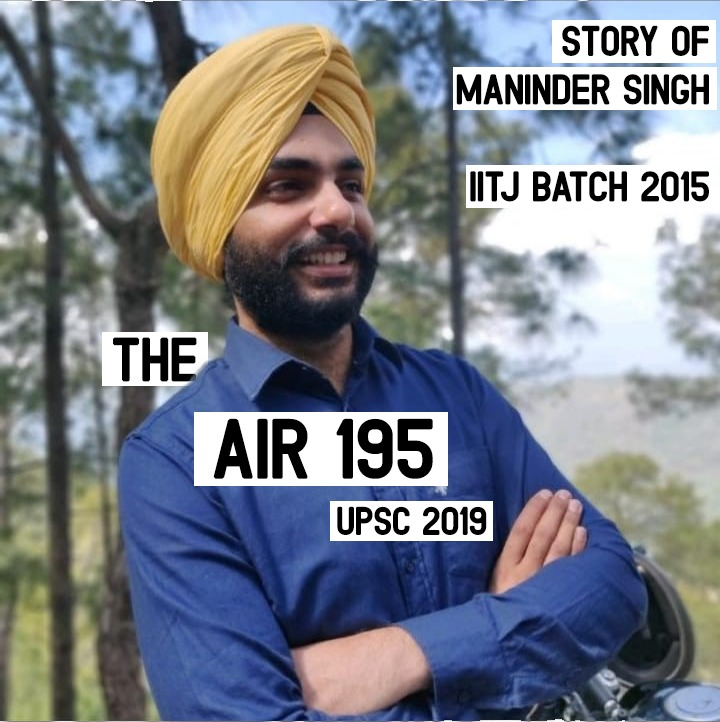

Maninder Singh Grabs UPSC AIR-195
Name : Maninder Singh
Rank: 195
Optional Subject : Geography
Medium : English
Place of birth : Ambala City
Place of residence : Mohali (Punjab)
Educational Qualifications :
10 th from St. Xavier’s Mohali – 92%
12 th from Shishu Niketan Chandigarh – 86%
B. Tech. in Mechanical Engineering from IIT Jodhpur – 6.75 CGPA
Occupation details :
Father – Sub- Divisional Officer – Water resources department, Punjab
Mother – Homemaker
Coaching details : GS from Vajiram and Ravi, Geography from Shabbir Sir (Vajiram and Ravi), test
series and mock interviews given at various institutes in Chandigarh and Delhi. I want to emphasise
that coaching is no substitute for hard work. In fact you can very well clear the exam with flying
colours without coaching.
My Journey.
- By Maninder SinghBack in June 2018, as you’re about to learn ahead, I needed a lot of motivation and read a lot of stories of successful candidates which gave me hope. My intention behind this write-up is simple – provide a glimmer of hope.
It was in May 2015 that I arrived in Delhi, started preparation, gave prelims without preparation just to get the feel of the exam and didn’t clear it. I gave Punjab PCS prelims and wrote mains but couldn’t clear that. I learned a very important lesson then when I’d switched off my phone for a while after the result.
I was still in Delhi for CSE 2016, increasingly frustrated at the rising cost of living, became insomniac, wasn’t able to sleep properly due to the noise (horns and dog barks) and started losing focus and also my mind, remaining irritated for most part of the day. I gave the interview that year and was waiting for the result on 31/5/2017 and at 7 got a big shock when I didn’t see my name up on the list. But then the important lesson had been learnt: to show up a brave face especially in front of your parents because for them the result doesn’t matter but your happiness and state of mind does. And they get anxious if you’re not okay, especially if you’re away from home. And so I acknowledged the fact that I’d indeed made very far in the first serious attempt (was extremely fortunate to get 787 in Mains- the cut-off marks for that year!).
But the expenses were taking a toll and my educational background suddenly started haunting me as I started getting swayed by societal expectations of an IITan- earning crazy money! So I decided to head back home for CSE 2017. I cleared prelims, was very happy with my attempt and was waiting for the result to be declared on 27 th April. Anxiety had already started building up close to the result days. That very same time at about 7 PM came the results. I searched but didn’t find my name. The important lesson came into play. Feeling devastated and numb inside, I had to pretend that everything is okay. Came back home, showed an extremely brave face to my parents, even comforted them that it doesn’t matter. I blamed an easy scapegoat for the bad result- my optional subject Geography.
But an even more devastating shock awaited me on 11/5/2018 when the marks came out. I’d scored 851 in Mains (806 being the cut-off) and only 132 in the PT and missed the list by 23 marks. I’d become normal thinking that geography ruined my attempt. But PT marks were incomprehensible! Who else do I blame now? It was me myself who did something horribly wrong at the PT and got such a low score. Yes I know PT is unpredictable, but a very low score makes you doubt yourself. I was not just blaming myself, but questioning my basic character-traits, every judgement, and every single act done in the past. It was like losing an identity, starting to hate oneself as an individual – and all due to just 30 minutes of PT.
And things only turned for the worst on 3/6/2018 – prelims for CSE 2018. I checked the answer key, was getting 94 and almost lost all hope. I hadn’t slept all night. At about 6 in the morning I filled up the form for SSC, 4/6 being last date of registration. I didn’t sign up for any test series, was doing nothing but staying in front of the books and engaging in destructive thought patterns. The basic thought I believe is this- 2 years of my life lost! 1 to wait for next prelims another 1 for the whole cycle to complete, apart from the other thought that 30 minutes cost me an year earlier. Regrets, what-ifs, tears, sadness, cursing luck and everything happened. And the saddest thing was thinking about my parents who I knew were getting bombarded with difficult questions about my future and yet having faith in me. This thought would make me feel like the weakest person alive. I’m pretty sure I was on the brink. These, anyone would concur, are the early signs of depression. However, one thought made me feel good – “This too shall pass”. It somehow did on 14/7/2018. Prelims result came and it was such a relief that I almost collapsed in my mother’s arms while telling her the result! I knew that this is something unusual, a Heavenly gift and an opportunity of a lifetime. I also discovered a new WHY: this time I was going to do it for my parents, to make them happy and proud. I prepared a schedule, got down to study and took active steps to take care of my mind and body- daily exercising and practising meditation. I was determined to give it my best try. I just wanted to be proud of my efforts in this attempt. I said to myself that whatever happens now would not be due to lack of efforts but fate. I went to a psychologist to understand what happens to me on the day of the interview to overcome that obstacle as well. And I kept saying to myself that even if I don’t qualify in CSE, I’ve learnt to work hard and wherever else I go, I would do good enough.
As fate would have it, things changed for good on 5/4/2019. The feeling was more of a relief. I could finally see the proud faces of my parents. They’d suffered much more than I had and thoroughly deserve to be blissfully happy.
Looking back, everything about the journey makes absolute sense. A lot of lessons needed to be learnt, a lot of mistakes were to be made, a lot of strength and resilience needed to be developed, a lot of faith needed to be placed on oneself and God. There are many folks out there who didn’t make it to the list. I’m sure many of them are much more capable and deserving than I am. This is where fate comes in. I was even more humbled and thankful to God for this blessing seeing my prelims score:
This journey is much more about becoming a civil servant. I am extremely fortunate to have absolute gems of persons surrounding me throughout the journey, especially my parents. I approached the UPSC journey in a positive stride - to develop such qualities that an ideal officer needs to have, to introspect deep into my personality and hone myself as a good citizen and a better person, and above all to develop an inquisitive attitude for living a lifetime of fulfilment. It is a transformational journey and my sincere advice is to approach it on these very lines. Take care of your mental and physical health and have a positive approach towards life. This exam is neither a medal of success nor a certificate of failure. It is just the means to a good career, which can be pursued in many other different ways. What ultimately would matter would be how you are as a person and how beautifully you’ve pursued life.
I wish every one of you the very best of luck for a great life ahead.
Suggestions for new aspirants :
- Have a positive and determined approach towards the exam if you’ve just started preparing – no distractions, no 2 nd thoughts about any back-up or anything. Just focus single-mindedly on what is in your hand – studying hard.
- Have absolute faith in yourself, your capabilities and your hard work. Your efforts will never go unrewarded. As I mentioned earlier, even if God-forbid you are unable to make it, you’ll become an altogether different personality in the end and do extremely well in life.
- The market is flooded with all types of content. My sincere advice is to focus on limited content and do repeated revisions of the same material, especially for the static portions.
- This exam is not testing the depth of your knowledge but the breadth of your knowledge. This means that you have to work very smartly to neither have too shallow knowledge of any topic, nor too deep because you get just 200 words to express.
- As a corollary to previous point, the exam requires you to write brilliant answers that stand out from the rest, and this requires a lot of practice. You can go through toppers’ answer sheets, have a look at how they write, what structure they follow. Then try to incorporate these in your daily answer writing practice. This is one portion which is extremely important, yet is overlooked by majority of the candidates.
- Memorise the Mains syllabus. If not, at least put up the syllabus in front of your study table. Also go through previous year papers. This way you’ll know about the topic you’re reading from any book or the newspaper and better judge its importance.
-
 Gmail - maninder.singh1192@gmail.com
Gmail - maninder.singh1192@gmail.com
Booklist that I followed:
History:
Ancient – R S Sharma Old NCERT
Medieval – NCERT Class 7
Modern – Spectrum for Prelims, Bipin Chandra for Mains
World history – Arjun Dev Old NCERTs Classes 9 th and 10 th (only topics mentioned in the syllabus)
Post-independence – VisionIAS summary available in ORN(Old Rajendra Nagar) + Pradhan Mantri series on Youtube
Culture – Nitin Singhania + Class 11 th Fine Arts NCERT
Geography: Optional covered most topics + GC Leong
Environment by Shankar IAS
Society: NCERTs for classes 11 th and 12 th
Polity: M. Laxmikant
GS 2 notes by M. Puri Sir – available in ORN shops
International relations notes by Chokhalingam Sir – available in ORN shops
Governance notes by Ram Babu Sir – available in ORN shops
GS3 security portion – Challenges to internal Security of India (TMH publication)
Economy portion + agriculture portions for GS3 – book by Ramesh Singh or Sriram IAS economy handout available at ORN shops
GS 4 – Lexicon
In case of any queries, suggestions or any sort of help, you can reach me at the following: